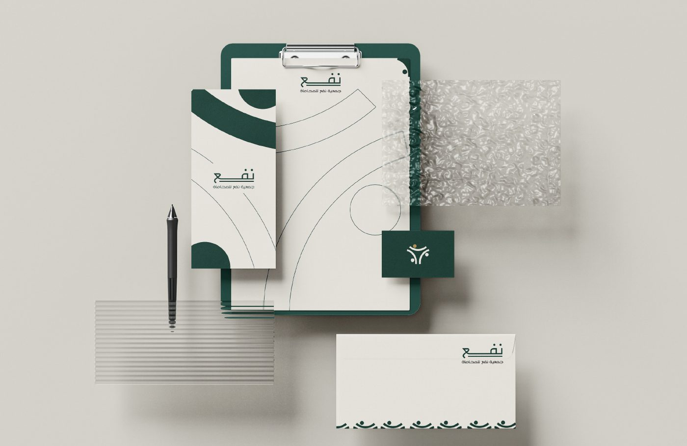
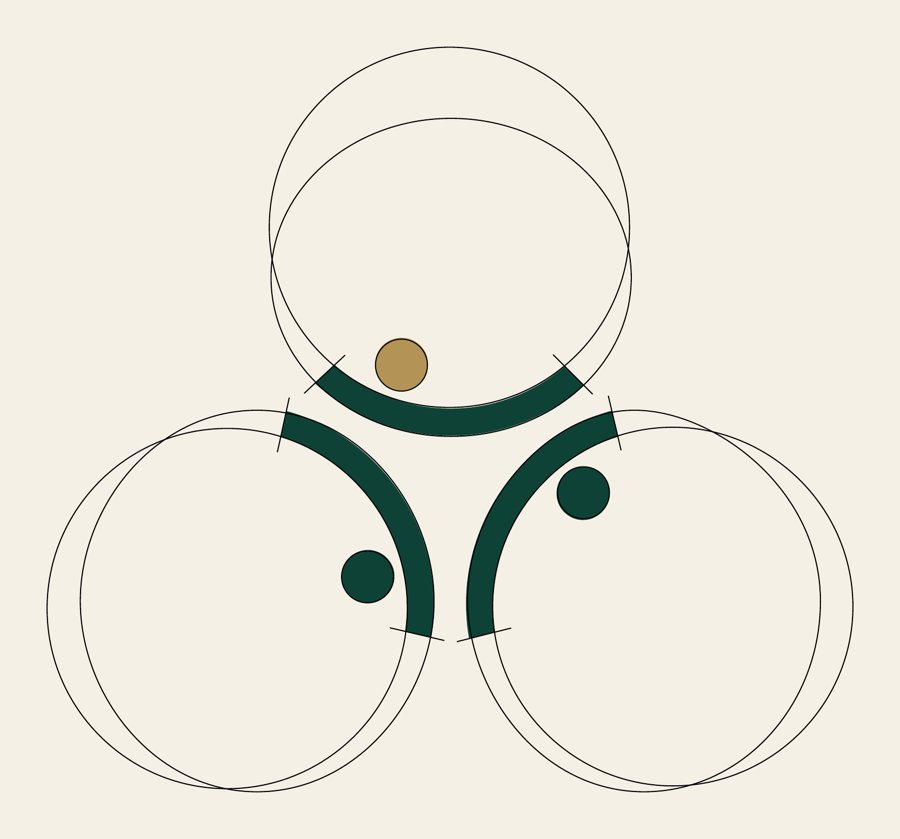

رؤيتنا
أن نكون المرجع الأهلي الرائد في تأهيل الكفاءات القانونية ونشر الوعي القانوني، لمجتمعٍ يعرف حقوقه ويؤدي واجباته.
جمعية أهلية مرخّصة، مقرها بريدة – منطقة القصيم، وتعمل تحت إشراف وزارة العدل.
من نحن
انطلقت جمعية نفع للمحامين من قناعة مجموعة من المختصين بأن المعرفة القانونية حقٌّ للجميع، وأن خريج القانون يحتاج إلى بيئة تحتضنه وتصقل مهاراته قبل أن يمارس المهنة.
لذلك جاءت الجمعية جسرًا يجمع أهل الاختصاص والخريجين الجدد من جهة، والمجتمعَ المحتاج إلى الوعي والخدمة القانونية من جهة أخرى؛ فتقدّم التدريب والتأهيل، وتسهم في تطوير الخدمات القانونية، وتنشر الثقافة القانونية، في إطار من النزاهة والمهنية.
وتعمل الجمعية ضمن تصنيف الخدمات القانونية، المحاماة والاستشارات القانونية (اللائحة الأساسية، المادة الأولى)، ومقرها الرئيسي مدينة بريدة، ويمتد نطاق خدماتها إلى مناطق المملكة الثلاث عشرة (المادة الرابعة).

بيانات رسمية
من شهادة الترخيص الصادرة من المركز الوطني لتنمية القطاع غير الربحي، ومن اللائحة الأساسية.
إلى أين نتجه
أن نكون المرجع الأهلي الرائد في تأهيل الكفاءات القانونية ونشر الوعي القانوني، لمجتمعٍ يعرف حقوقه ويؤدي واجباته.
تقديم برامج تدريب وتأهيل وخدمات قانونية نوعية للمتخصصين وخريجي القانون والفئات المستفيدة، عبر شراكات فاعلة تسهم في تعزيز العدالة وخدمة المجتمع.
أهداف الجمعية كما وردت في المادة الخامسة من اللائحة الأساسية: صفحة الأهداف.
لمن نعمل
المحامون والمستشارون والمتدربون الراغبون في تطوير مهاراتهم المهنية.
خريجو كليات وأقسام القانون في الجامعات، لتأهيلهم وتهيئتهم لسوق العمل.
من يحتاجون إلى الخدمات والاستشارات القانونية.
رفع الوعي القانوني لدى أفراد المجتمع ليعرفوا حقوقهم وواجباتهم.

الهوية البصرية
الرمز أشخاص بأذرع مرفوعة تلتقي في نقطة واحدة، رمزًا للتكاتف والعون المتبادل. والنقطة الذهبية هي القيمة والأثر الذي تتركه الجمعية.
وفي التفاصيل لمسة خفية: كل شخص بقوسه ونقطته يلمّح لحرف النون، أول حرف من نفع، فالناس هم أصل النفع.
المصدر: ملف الهوية البصرية للجمعية.